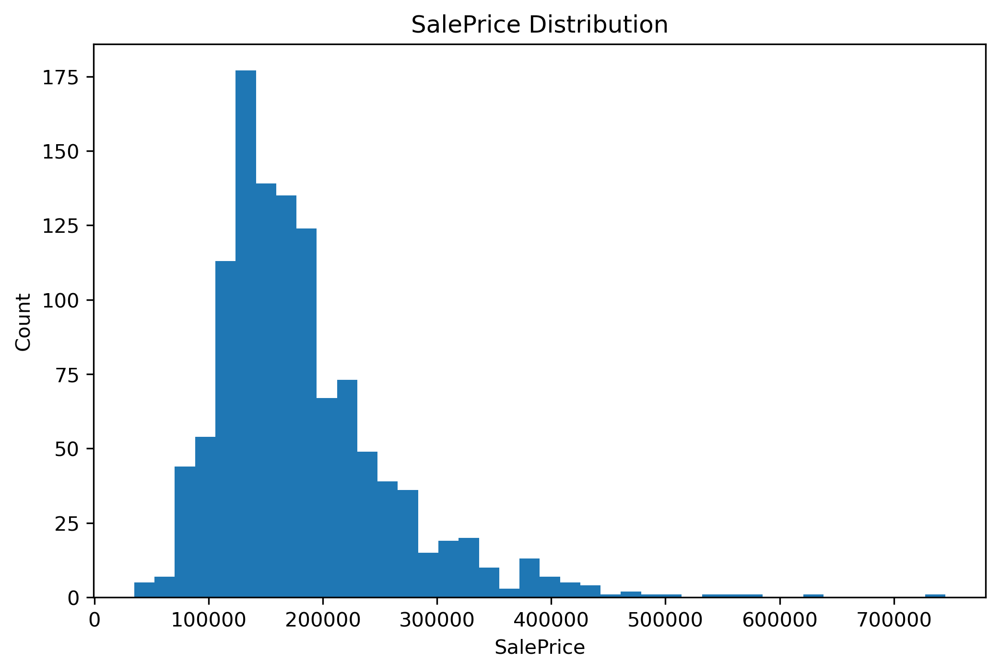
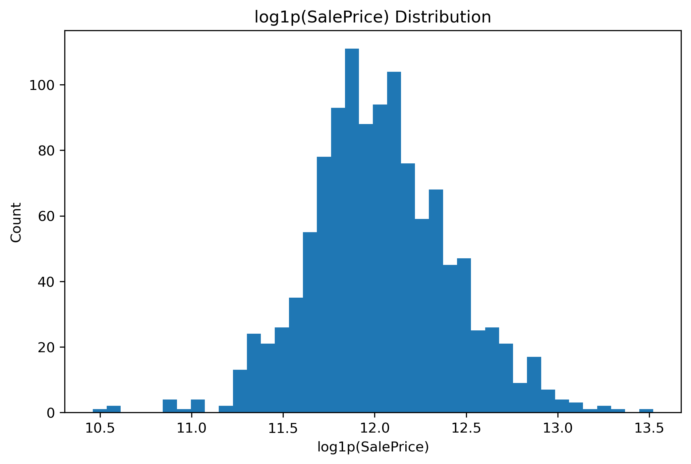
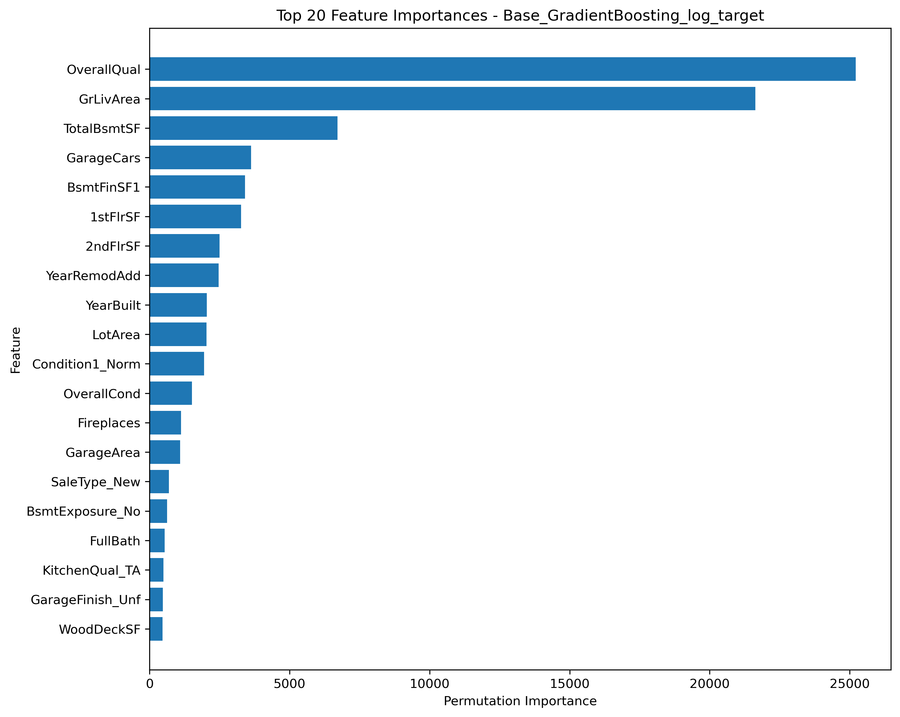
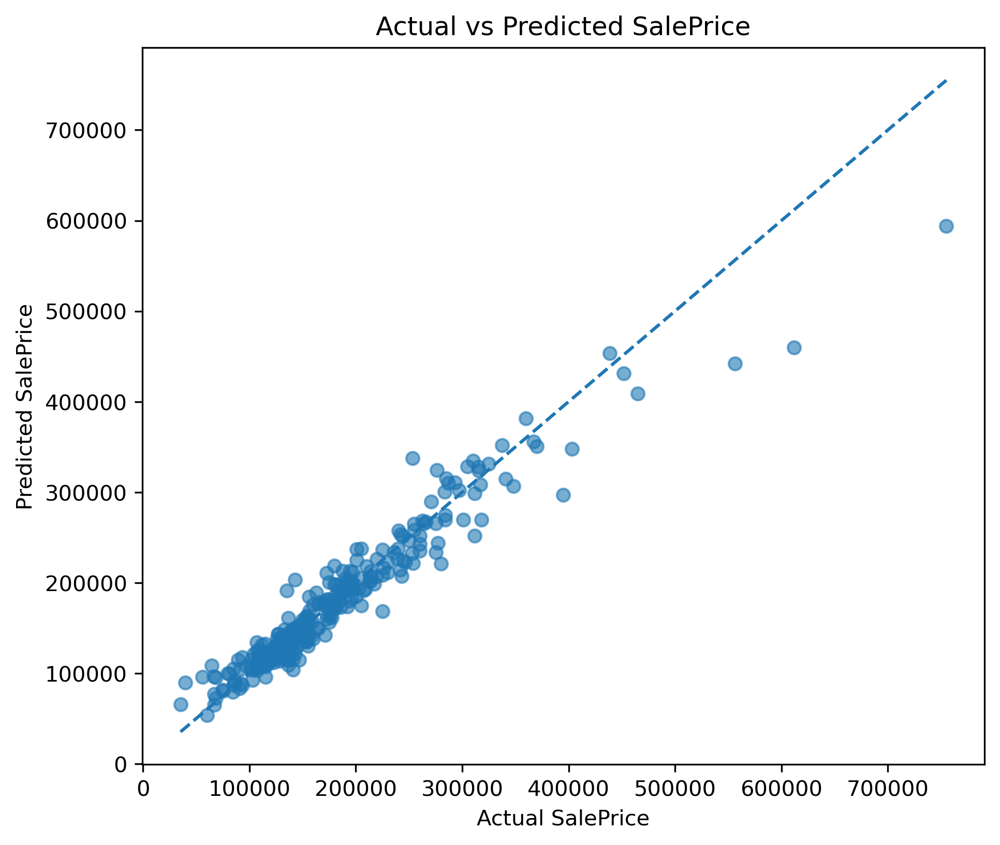
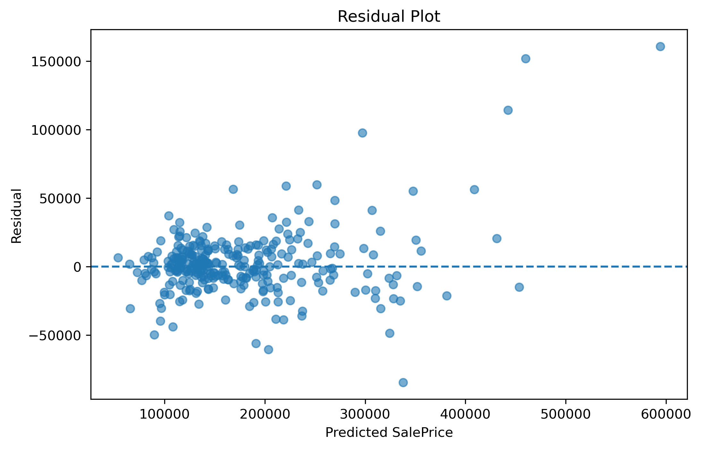

多模型融合的房价预测研究
本项目围绕 Ames Housing 数据集开展了一个完整的监督学习回归任务研究，重点比较了多个传统回归模型与树模型的预测能力，并通过加权融合构建更稳定的房价预测系统。
融合模型 RMSE
24283.68
融合模型 R²
0.9231
融合模型 MAE
15114.53
项目概述
该项目以 Ames Housing 为实验数据，构建了房价回归预测 pipeline，系统比较了线性模型和树模型在房地产价格预测任务中的表现，并通过模型融合得到更稳健的结果。
数据集介绍
使用的公开房价数据集包含 1460 条训练样本和 1459 条测试样本，目标变量为 SalePrice。数据中既包含连续型特征，也包含大量类别型特征，具备典型的真实房屋交易数据特征。
| 内容 | 说明 |
|---|---|
| 数据集 | Ames Housing |
| 任务类型 | 监督学习回归任务 |
| 训练集 | 1460 条样本 |
| 测试集 | 1459 条样本 |
| 预测目标 | SalePrice |
数据预处理流程
- 缺失值处理
- IQR 异常值处理
- 类别变量 One-Hot 编码
- StandardScaler 标准化
- 低方差特征筛选
- log1p 目标变量变换，缓解房价分布右偏问题
特征工程
通过结合原始字段与人工衍生特征，构造更适合模型学习的输入空间。同时对特征工程的稳定性进行讨论，发现并非所有人工特征都会稳定提升所有模型的表现。
模型对比
- Linear Regression
- RidgeCV
- LassoCV
- ElasticNetCV
- Random Forest
- Gradient Boosting
其中 RidgeCV 验证集 RMSE 为 25567.84，Gradient Boosting 验证集 RMSE 为 25555.43，说明两类模型在不同结构上各具优势。
模型融合方法
采用 RidgeCV 与 Gradient Boosting 的加权融合策略，最终融合权重设为 0.5：0.5。实验表明，融合模型在验证集上综合表现优于单一模型。
最终指标
- 融合模型 RMSE：24283.68
- 融合模型 MAE：15114.53
- 融合模型 R²：0.9231
关键特征分析
通过特征重要性分析发现，OverallQual、GrLivArea 和 TotalBsmtSF 是影响房价预测结果最关键的几个特征，说明房屋整体质量和面积相关变量在该任务中最具解释力。
项目结论
- log1p 目标变量变换明显改善了房价右偏问题。
- RidgeCV 更擅长学习整体线性关系。
- Gradient Boosting 更擅长学习非线性关系。
- 模型融合后预测效果优于单一模型。
项目局限性
尽管融合模型取得了较好的效果，但人工衍生特征并不一定对所有模型都稳定提升，且模型在极端房价样本上的预测仍有提升空间。
图片展示区域
房价分布变化图

房价 log 分布图

特征重要性图

真实值与预测值图

残差分布图
